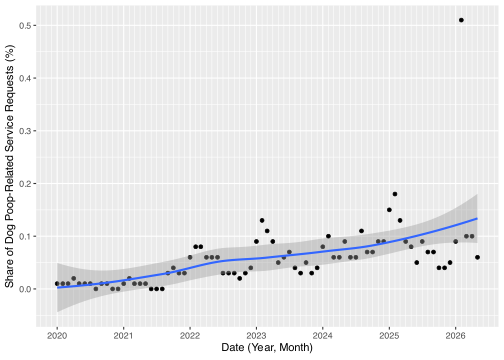

# Use quarto render to generate a static site in /docs# Set github pages to deploy from main branch, /docslibrary(flextable)library(sf)library(tidyverse)library(socratadata)library(lubridate)library(mapgl)library(glue)library(scales)library(ggrepel)# If needed, ensure that the Quarto render and RStudio read the same environment varsreadRenviron(".Renviron")
Per its data dictionary on NYC Open Data, New York City’s 311 program includes 5,963 specific Service Request (SR) types that can be directed to specific agencies. Of these nearly 6,000 ways to formally complain to the city, exactly six relate to dog poop. They are:
Code
dog_poop_sr <-read_csv("dog_poop_SRs.csv")dog_poop_complaints <-soc_read("https://data.cityofnewyork.us/Social-Services/311-Service-Requests-from-2020-to-Present/erm2-nwe9/about_data",query =soc_query(where ="borough = 'MANHATTAN' AND ((descriptor = 'Dog Waste') OR (descriptor = 'Animal Waste' AND descriptor_2 = 'Dog'))" ))mn_SRs_20_26_countOnly <-soc_read("https://data.cityofnewyork.us/resource/erm2-nwe9.json",query =soc_query(select ="count(*) as count",where ="borough = 'MANHATTAN'" ))min_date <-min(as_date(dog_poop_complaints$created_date))max_date <-max(as_date(dog_poop_complaints$created_date))n_complaints <-nrow(dog_poop_complaints)dog_poop_sr |>flextable() |>set_table_properties(width =1, layout ="autofit") |>align(j =1, align ="left", part ="all")
Agency
Complaint Type
Descriptor
Additional_Details
Public View
Location_Type
Department of Sanitation
Dirty Condition
Dog Waste
Not Cleaned by Property Owner
Yes
Sidewalk
Department of Sanitation
Dirty Condition
Dog Waste
Not Cleaned by Property Owner
Yes
Street
Department of Sanitation
Dirty Condition
Dog Waste
Not Picked Up by Dog Owner
Yes
Sidewalk
Department of Sanitation
Dirty Condition
Dog Waste
Not Picked Up by Dog Owner
Yes
Street
Department of Parks and Recreation
Animal in a Park
Animal Waste
Dog
Yes
Park
Department of Parks and Recreation
Animal in a Park
Animal Waste
Dog
Yes
Street/Curbside
Between 2020-01-03 and 2026-04-13, there were 2,531 dog poop-related service requests filed in Manhattan. Dog poop-related service requests accounted for 0.06% of all service requests filed in Manhattan for the same time period. Despite this, the presence of dog poop on city streets is a top-of-mind quality of life issue for many New Yorkers.
When considering the spatial variation in a particular Service Request type as it relates to quality of life concerns at a given geographic unit (here, Community Districts are used), two factors must be considered:
311 Service Request data are records of citizen interaction with a government system, not direct observation of the associated phenomenon, and
There is spatial variation in 311 contacting volume, which is a function of contacting propensity and condition. See Minkoff (2016)1 for further discussion.
Therefore, when considering the variation in dog poop-related Service Requests across Manhattan Community Districts, it must be reiterated that this is not an actual measure of dog poop on Manhattan streets. We also expect that Service Request volume will largely account for the variation in dog poop Service Requests – Where it doesn’t warrants further investigation.
A linear model of dog poop service requests as a function of service request volume at the Community District level allows for an evaluation of the above relationship. Model residuals (i.e. the error, or how different the observed relationship between dog poop service requests and request volume is from the expected relationship) are a useful measure of which Community Districts have greater or fewer dog poop service requests than expected.
Code
mn_SRs_20_26 <-soc_read("https://data.cityofnewyork.us/resource/erm2-nwe9.json",query =soc_query(select ="community_board, count(*) as count",where ="borough = 'MANHATTAN'",group_by ="community_board" ))mn_dp_SRs_20_26 <-soc_read("https://data.cityofnewyork.us/resource/erm2-nwe9.json",query =soc_query(select ="community_board, count(*) as dp_count",where ="borough = 'MANHATTAN' AND ((descriptor = 'Dog Waste') OR (descriptor = 'Animal Waste' AND descriptor_2 = 'Dog'))",group_by ="community_board" ))
Code
mn_comparison_20_26 <- mn_dp_SRs_20_26 |>left_join(mn_SRs_20_26) |>filter(community_board !="Unspecified MANHATTAN")fit <-lm(dp_count ~ count, data = mn_comparison_20_26)ci <-predict(fit, interval ="confidence", level =0.95)mn_comparison_20_26$lwr <- ci[, "lwr"]mn_comparison_20_26$upr <- ci[, "upr"]mn_comparison_20_26$outlier <-with(mn_comparison_20_26, dp_count < lwr | dp_count > upr)ggplot(mn_comparison_20_26,aes(x = count, y = dp_count)) +geom_point() +stat_smooth(method ="lm", col ="red") +geom_text_repel(data =subset(mn_comparison_20_26, outlier),aes(label = community_board), # swap in whatever your CB label column issize =3,min.segment.length =0,box.padding =0.4 ) +scale_x_continuous(labels =label_comma()) +labs(x ="Service Requests, All Categories",y ="Dog Poop Service Requests",title ="Manhattan 311 Dog Poop Service Requests as a Function of Request Volume",subtitle ="2020 - 2026 (YTD), by Community District")+scale_y_continuous(minor_breaks =seq(-250,700,50))

The linear regression of dog poop-related service requests as a function of overall request volume in Manhattan Community Boards (2020 - 2026 YTD) is statistically significant with a p-value of less than 0.01. The adjusted R2 of the regression is 0.6957, meaning that 69.57% of the variance in dog poop service requests in Manhattan is accounted for by request volume. Those Community Districts whose observed service request volumes are of interest. Manhattan Community Districts 2, 3, and 5 have lower-than-expected counts of dog poop service requests since January 1, 2020, while only Manhattan Community District 12 has a higher than expected count of dog poop service requests.
Given the basis for identifying Community District 12 as an area of concern, we can look for those blocks which have the highest number of requests as potential sites for further investigation:
Each of the 730 dog poop-related Service Requests filed in Manhattan Community District 12 between 2020 and 2026 (YTD) can be associated with the nearest block per the Street Centerline dataset. The blocks with the 10 highest counts of nearest Service Requests are shown below.
The top 10 blocks (street segments, to be specific) represent 62.88% of the dog poop-related Service Requests. Notably, there is a cluster of 360 Service Requests located on and around Riverside Drive between West 158th and West 160th streets.
Based on the above, accurate, appropriately contextualized, and defensible messaging may be something like:
We crunched the numbers – Since 2020, New Yorkers filed 80 to 360 more dog poop-related Service Requests in Manhattan Community District 12 than expected based on request volume. We decided to take a closer look. Over 60% of the service requests were filed on and around Riverside Drive between West 158th and West 160th streets. Other clusters of requests came from the West side of Hood Wright Park, Fort Washington Ave between West 187th and West 190th streets, near Hillside Ave and Borgardus Place, and on Seaman Ave between Dyckman and and Cumming Streets.
Moving to looking at Dog License data, we’d similarly need to normalize the data at the zip code level by population.